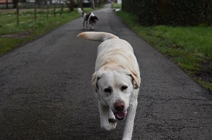

Ervaringen
Op deze pagina vind je mijn al mijn ervaringen (werkervaringen, stages,...)
Stages
Ik heb niet echt stages gedaan. Ik ben wel voor het school in het 5de middelbaar naar een bedrijf moeten gaan. Ik heb daar in het systeem mogen gaan kijken. Het was heel grote ervaring. Hoe het allemaal ineen zat. Ik heb er heel veel van geleerd. Bv: databases, website…. Deze dingen kom ik nu tegen in mijn studie.
Website ervaring
Websites coderen heb ik ook in het 6de middelbaar gezien en ik wou daar iets met gaan doen, daardoor begon ik stilaan websites te maken, er uit te leren,... Nu in mijn studie komt dit ook voor --> websites maken. Daardoor is de interesse ook groter nu voor websites.
Ik ga momenteel beginnen aan een project. Dit is een website voor een fotograaf en voor mezelf (want ik ben ook fotograaf).
Werkervaring
RAES CONSTRUCTIES
Ik deed verschillende taken. Ik moest bijvoorbeeld aan verschillende machines staan. De eerste dag werd mij alles uitgelegd want niemand kon bij mij in de eerste week komen staan. Ze zeiden dat ik redelijk goed mijn plan kon trekken. Ik kreeg een serieuze verantwoordelijkheid en het is goed gekomen. Wat een ervaring!
Net dezelfde taken dat hier boven staan. Alleen mocht ik langer werken, omdat ze super tevreden waren over mijn werk. Ook mocht ik aan de computer gaan werken, omdat ik iets had gezegd over mijn studie programmeren. Ik kreeg als verantwoordelijkheid, de overdracht van het oude sytseem naar het nieuwe systeem. Dit was een hele ervaring voor mij. Het was hard werken, maar ook heel leuk.(hierdoor kreeg ik een beetje meer ervaring in dit en ging het beter en beter.
SPAR SCHRIEK
Ik ben in de Spar van Schriek bezig. De eerste dagen kreeg ik opleiding aan de kassa. Binnenkort ga ik rekken aanvullen enzovoort,...